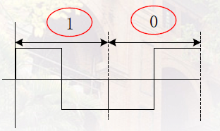

物理层
2.1 物理层的基本概念
- 机械特性
- 接线器的形状和尺寸，引线数目和排列，固定，锁定装置
- 电气特性
- 各条线的电压等
- 功能特性
- 某条线上出现的某一电平的电压表示的意义
- 过程特性
- 不同功能的各种可能事件的出现顺序
2.2 数据通信的基础知识
2.2.1 数据通信系统的模型

两个关键过程：调制 解调
关于调制，解调过程重要性的理解。
信号的衰减在数据的传播过程中不可忽略。
实例：使用十米的延长线连接电脑和移动硬盘，电脑无法识别。
为了解决这种问题，有专家发现高频的信号衰减较小，更加适合远距离传输。于是便有了调试解调的过程。
关于调制的理解
模拟信号->数字信号
两个步骤：1. 抽样 2. 量化
抽样后，仅仅在时间本身做了离散化，样点能取到的值仍然是连续的
因此需要量化进行将样点取到的值离散化， 如四舍五入等方法。
几个概念
码元
码元：数字通信中一个基带波形所对应的二进制玛组。

关于单极性和双极性的思考：单极性的码元容易出现误码，双极性会好很多。